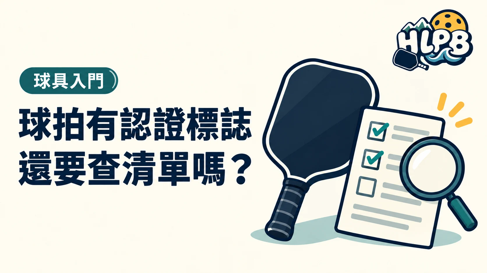

需要。準備參賽時，先看該賽事採用哪套器材規範，再核對品牌與完整型號。拍上的標誌不能取代目前清單與主辦規定。
查詢順序
- 查賽事章程，確認要求的認證與器材規範。
- 找到球拍的品牌、完整型號及版本資料。
- 到相應官方核准清單核對。
- 查不到或資料有差異時，先請原廠、販售者或大會協助確認。
| 看見的資料 | 可以確認什麼 | 還缺什麼 |
|---|---|---|
| 拍面認證標誌 | 球拍上的標示 | 目前清單狀態與賽事適用規範 |
| 官方清單型號 | 對應器材資料 | 是否與手上的完整型號及版本一致 |
| 賽事章程 | 大會採用的要求 | 不清楚的個別器材疑問 |
認證資格與好不好打，要分開判斷。 通過某項器材規範，不代表它最適合你的程度、打法或預算。
同系列名稱、不同版本不能直接當成同一支拍。若現有球拍改裝，也要另外確認改裝限制，不能只查原型號就結束。
這篇不替任何球拍保證當天的參賽資格，最新清單與大會採用的規範才是核對依據。
查詢前，先把球拍身分記完整
至少準備品牌、完整型號、厚度、拍型與可辨識的版本資訊。商品名稱若只有系列名，先回到原廠產品頁核對。不要因為一支相似名稱出現在清單，就認定手上不同版本也已獲核准；清單上的圖片與文字應一起對照。
查不到，不要立刻替產品下結論
先檢查拼字、品牌欄位與型號命名，再向原廠、代理商或賽事方確認。查不到可能只是資料不足，不能直接據此宣稱是假拍；但在參賽資格尚未確認前，也不宜自行向其他球友保證可以使用。把查詢日期與對應頁面留存，方便後續核對。
| 查詢結果 | 接下來確認 |
|---|---|
| 找到完全對應型號 | 當前狀態與預定賽事是否採用同一規範 |
| 只找到同系列其他版本 | 厚度、拍型及版本是否確實相同 |
| 查不到對應資料 | 請原廠或大會確認，不自行補猜型號 |
| 球拍已有外加配件 | 另外檢查安裝與改裝要求 |
需要每次都重新查嗎？
準備重要賽事或更換球拍版本時，重新查看當前要求，比只保存很久以前的截圖可靠。器材資格、真偽與使用感受各有不同查核方式：清單能提供規範資料，購買通路能協助來源問題，試打才能回答適不適合自己。
來源：USA Pickleball Approved Equipment 官方資料 ↗；官方球拍清單 官方資料 ↗。資料核對：2026/10/19。
最後查證：2026-10-19｜資料來源：HLPB 編輯整理與正文所列官方資料
返回文章列表